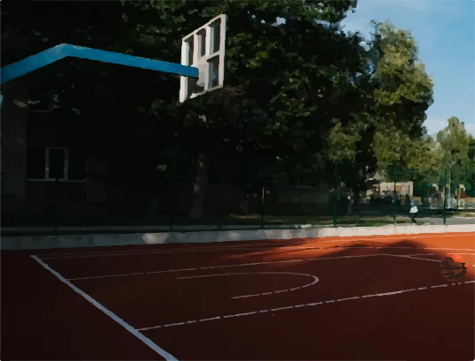

На базі 33 школи, можна знайти баскетбольний майданчик, куди можна прийти після 16:00, адже до цього часу там можуть займатися учні навчального закладу. Майданчик є абсолютно безкоштовним, присутнє нічне освітлення, а відкритий він до 22:00
